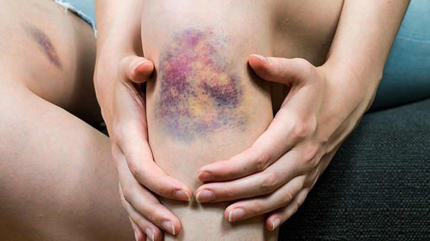
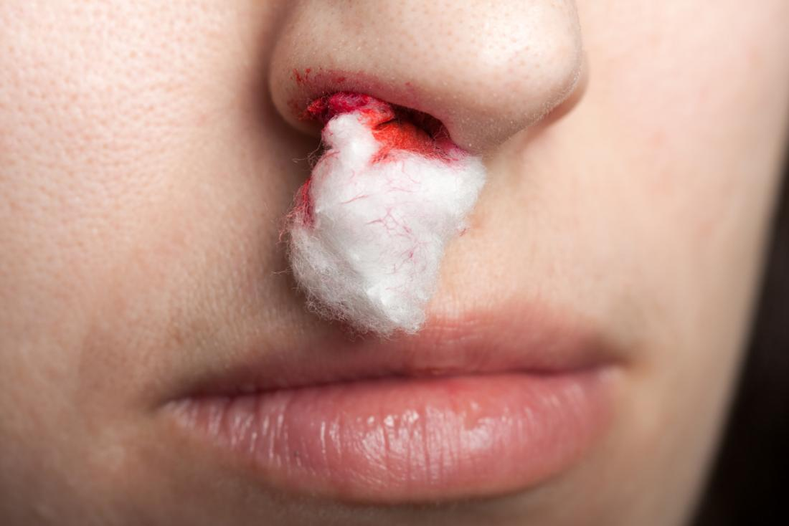
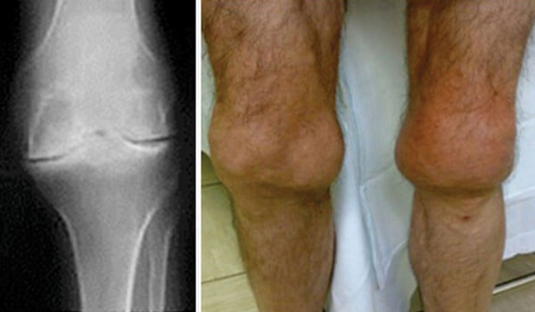

Hemophilia is a type of recessive sex-linked blood disorder in which the blood does not clot correctly. This can be a big problem when someone with this condition gets a cut because they won't be able to stop the bleeding. It is a fairly rare disease with less than 200,000 US cases per year.
Small exterior cuts may be cause for concern but usually are harmless, the real danger to hemophiliacs is internal bleeding or bleeding in the joints which cant be easily stopped and can be life-threatening.
Symptoms of Hemophilia
The most obvious symptom of Hemophilia is the inability to stop bleeding from a small cut. Other symptoms include:
Many large or deep bruises
Joint pain and swelling. Joint pain occurs because often joint rubbing can lead to bleeding and blood pressure in the joints can lead to discomfort and pain.
Unexplained bleeding.
Blood in urine or stool.
Often nosebleeds without a known cause.
Irratability in infants.
Hemophilia Presention
Hemophilia often presents itself as bruising or reddening of the skin. This is because of subcutaneous bleeding cauing a redding hue of the skin.

Bruising

Nose Bleed

Joint swelling due to build up of blood
Treating Hemophilia
Hemophilia has no known cure but it can be treated. The strongest treatment option is replacing the missing clotting factor often and regularly. There are also newer clinical trials dealing with gene thearapy and specific protein inhibitation.
Other Treatment methods
Desmopressin. In some forms of mild hemophilia, this hormone can stimulate the body to release more clotting factor. It can be injected slowly into a vein or used as a nasal spray.
Emicizumab (Hemlibra). This is a newer drug that doesn't include clotting factors. This drug can help prevent bleeding episodes in people with hemophilia A.
Clot-preserving medications. Also known as anti-fibrinolytics, these medications help prevent clots from breaking down.
Fibrin sealants. These can be applied directly to wound sites to promote clotting and healing. Fibrin sealants are especially useful for dental work.
Physical therapy. It can ease signs and symptoms if internal bleeding has damaged your joints. Severe damage might require surgery.
First aid for minor cuts. Using pressure and a bandage will generally take care of the bleeding. For small areas of bleeding beneath the skin, use an ice pack. Ice pops can be used to slow down minor bleeding in the mouth.
What is the difference between Hemophilia A and B?
For blood to clot correctly it needs proteins called clotting factors. One subset of these factors is coagulation factors (turning a liquid into a solid). There are many different coagulation factors but in the case of Hemophilia A, there is a lack or total absence of coagulation factor VIII. Whereas in Hemophilia B, there is a shortage or absence of coagulation factor IX.